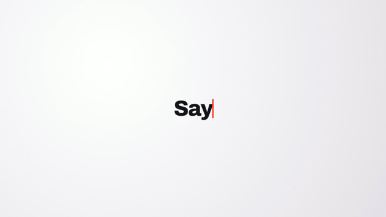
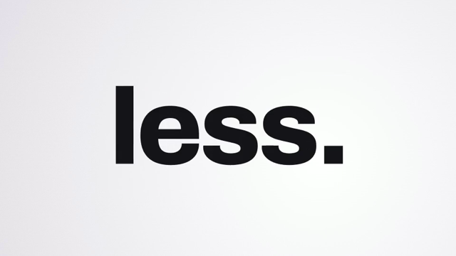
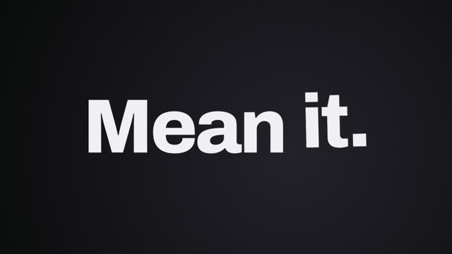
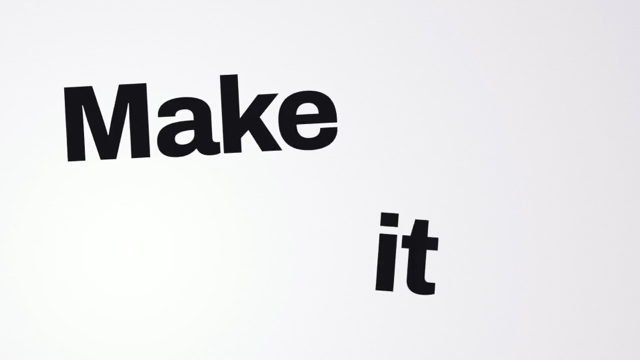
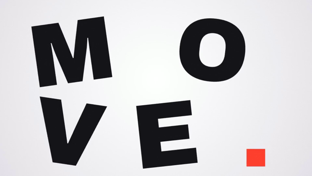
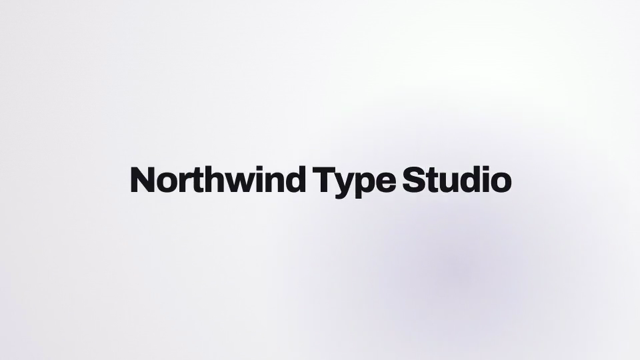

Spec
- Length
- 8.0 s
- Aspect
- 16:9
- Beats
- 6
- Inputs
- 8 words
- Sound cues
- 6
- Media slots
- 0
- Tier
- Free, Apache-2.0
$ npx vawe new my-film --template kinetic-quote
Six beats






Eight inputs
- 01Word 1, typed
Say - 02Word 2, decoded
less. - 03Word 3, slams
Mean - 04Word 4, slams
it. - 05Word 5, tilts in
Make - 06Word 6, tilts in
it - 07Last word, fills the frame
move. - 08Credit, typed
Northwind Type Studio